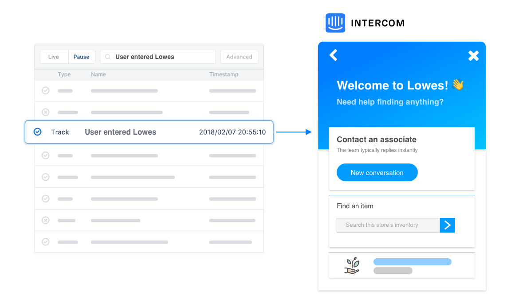
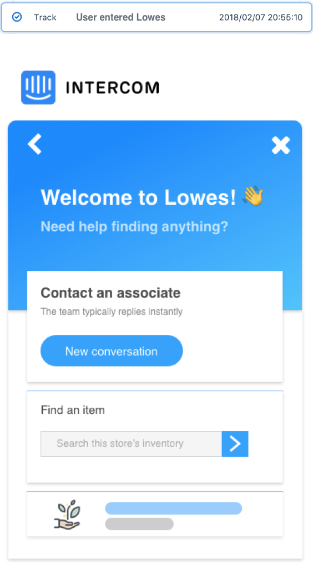
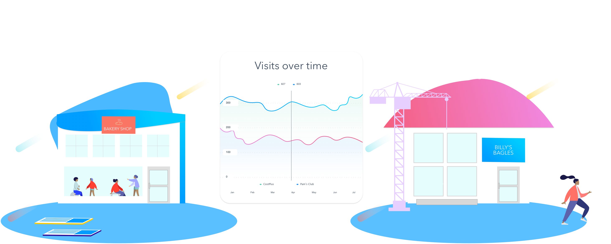
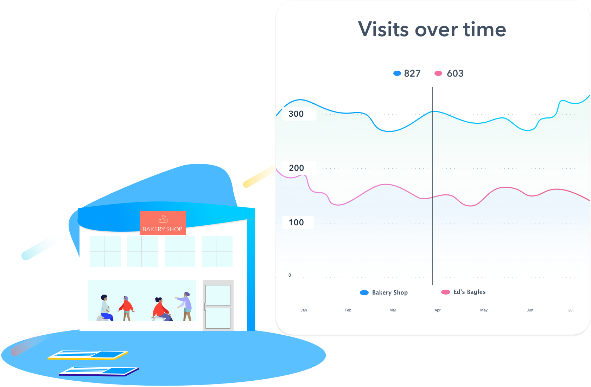
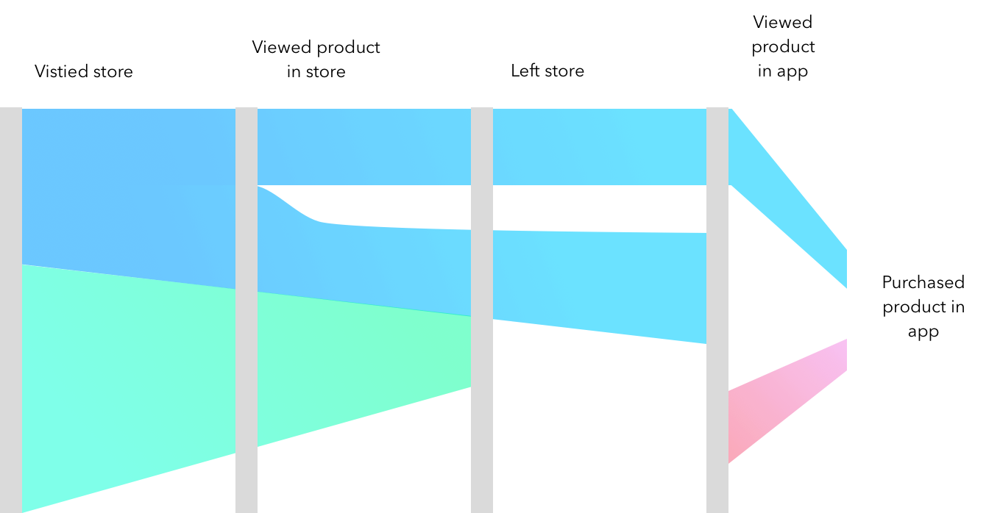

Supercharge the tools you already use with location data
There are SO many different platforms out there that help you engage, follow up, and understand your users. Connecting SpotSense to Segment lets integrate location data into over 200 services like Google Analytics and Hubspot.

Start conversations with customers in store
You can't always be there in person when a customer needs you in store. Be there without "being there" by using SpotSense geofencing to trigger a conversation on Intercom as soon as your users enter the building. Add automated responses to cut down the need for a real person.


Compare competitor visits with your own
Ever wonder how often your users are going to your competitor's location? By creating geofences around your competitors and sending that data to Mixpanel, you can get a birds eye view on how often users visit your competitor and compare it with your own store.


See how offline views drive online purchases
We've all heard of the person who views the item in store just to buy it online. Quantify the effect that has by sending Bluetooth beacon data to Amplitude and creating a Pathfinder chart. Now you can tie real world interactions with products into your mobile app metrics.

Join the Beta
Add location data to your tech stack
Add location data to your tech stack